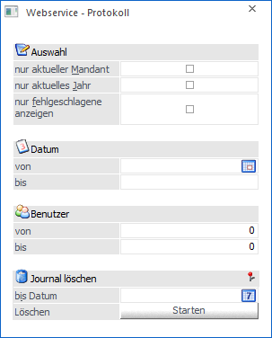
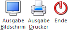

Mit Hilfe der WEBServices können unterschiedliche Aktionen ausgeführt werden, um z.B. Daten zu Importieren oder dergleichen. Über den Menüpunkt
1 WinLine START
1 Action Server
1 Webservice - Protokoll
ist es möglich, ein Protokoll der ausgeführten WEBService - Aktionen auszuwerten.

Ø Auswahl
Durch Aktiveren der entsprechenden Auswahl kann bestimmt werden, ob
ü nur Zeilen des aktuellen Mandanten,
ü nur Zeilen des aktuellen Wirtschaftsjahres,
ü bzw. nur fehlgeschlagene Zeilen
ausgegeben werden sollen.
Ø Datum
Einschränkung der auszugebenden Zeilen auf einen Datumszeitraum.
Ø Benutzer
Eingrenzung der Auswertung auf bestimmte Benutzer.
Ø Journalzeilen löschen bis
Sollen Journalzeilen aus dem WEBService - Protokoll gelöscht werden, kann dazu ein Datum (bis zu dem gelöscht werden soll) angegeben werden und anschließend der "Löschen"-Button gedrückt werden.
Buttons

Ø Ausgabe Bildschirm
Mit Hilfe des Buttons "Ausgabe Bildschirm" oder der Taste F5 wird das Protokoll am Bildschirm ausgegeben.
Ø Ausgabe Drucker
Durch Anwahl des Buttons "Ausgabe Drucker" wird das Protokoll am Drucker ausgegeben.
Ø Ende
Durch Anwahl des Buttons "Ende" bzw. der Taste ESC wird das Fenster geschlossen.